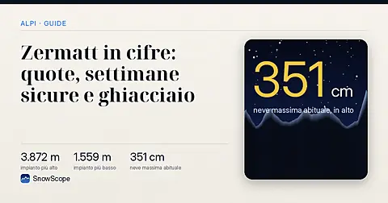
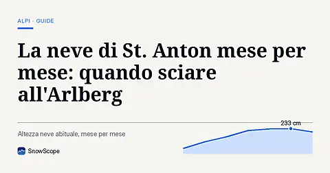

Bollettini neve · Alpi
Bollettini neve quotidiani per sciatori: dove c'è neve, cosa arriva e dove sciare, dalla mappa neve di SnowScope e dalle stazioni di misura. Ogni numero viene dai dati del giorno.
La neve per paese oggi
I paesi più bianchi oggi: Svizzera (76 %), Austria (61 %) e Italia (30 %).
Più neve fresca nella settimana: Italia (40 cm), Slovenia (38 cm) e Francia (37 cm).
La neve oggi nelle grandi stazioni
- La Grave · 166 cm
- Orelle · 163 cm
- Val Thorens · 163 cm
- Val Thorens · 159 cm
- Les Deux Alpes · 126 cm
- Alpe d'Huez Grand Domaine · 123 cm
- Espace Haute Maurienne Vanoise · 93 cm
- Les Arcs · 91 cm
- Le Grand Domaine · 89 cm
- Bonneval-sur-Arc · 87 cm
- Les Trois Vallées · 87 cm
- La Rosière · 86 cm
- Les Grands Montets · 86 cm
- La Thuile ski · 82 cm
- Les Ménuires · 81 cm
- Courmayeur · 80 cm
- Paradiski · 79 cm
- Saint François Longchamp · 78 cm
- Valmorel · 78 cm
- Brévent/Flégère (Chamonix) · 76 cm
- Glacier 3000 · 76 cm
- Ovronnaz · 76 cm
- Courchevel · 74 cm
- Méribel · 74 cm
In evidenza

Pianifica il tuo viaggio a Les Orres nel dicembre 2026 confrontando i prezzi dei pass settimanali con il nostro storico della neve di 46 inverni passati.

Scia a Livigno per 51,50 EUR al giorno prima del 18 dicembre, quando la neve in cima raggiunge i 30 cm nel 100 % degli inverni passati.

Zermatt ha 47 cm sui versanti superiori oggi, 690% al di sopra della mediana di novembre. Il livello 0°C rimane al di sopra di 2200 m fino a venerdì.

Terenten ha 73 cm sui versanti superiori al 4 novembre; il livello di congelamento raggiungerà 2.970 m il 5 novembre, portando pioggia alla vetta a 1.381 m.

Artesina tiene il manto più profondo delle Alpi questo weekend con 22 cm sui pendii superiori. La settimana 10 vede storicamente le migliori condizioni. Dati dal 5 novembre.

Skipass giornalieri alpini da 36 EUR: nove stazioni confrontate per prezzo, chilometri di piste e neve che offrono di solito, per trovare la miglior giornata di sci in rapporto al prezzo.

Sci sul ghiacciaio da 68 EUR al giorno: abbiamo confrontato sette ghiacciai in Francia, Austria, Germania e Svizzera per prezzo e per la neve che di solito trattengono a dicembre.

Sei giorni di sci da 191 EUR: abbiamo classificato dieci settimane sugli sci low cost in Europa per prezzo, poi abbiamo controllato 46 inverni passati per capire dove la neve è affidabile.

Da 20 EUR per un weekend di apertura a skipass da 6 giorni prima di Natale: un calendario delle offerte sci più economiche di inizio stagione nelle Alpi per il 2026, con la neve che puoi aspettarti.

Scia su 157 km di piste mappate a Serre Chevalier, dove la cima della montagna ha una probabilità del 100 % di avere neve entro metà dicembre.

Dieci stazioni sciistiche europee classificate per il valore di dicembre, guidate da Les 2 Alpes con 75 cm di neve a metà montagna.

Orcières Merlette offre una base elevata a 1.826 m e uno skipass di 6 giorni da 227 EUR, rendendolo una scelta affidabile per una vacanza sulla neve a dicembre.

Alpe d'Huez merita per dicembre 2026? Controlliamo le probabilità di neve, il prezzo di partenza di 58,00 EUR e confrontiamo con Les 2 Alpes.

Scia sui 131 km di piste della Forêt Blanche questo dicembre con uno skipass di sei giorni a 298 EUR.

Al Monterosa Ski lo skipass giornaliero online va da 40,00 a 71,00 EUR. A dicembre la neve è in quota: 124 cm abituali a 3.030 m, 6 cm a 1.207 m.

Puy-Saint-Vincent offre uno skipass giornaliero adulto a 44 EUR con buona neve a dicembre in quota, confrontato qui con il grande vicino Serre Chevalier.

Grimentz-Zinal offre 71 km di piste e una neve sicura in alta quota per il tuo viaggio di dicembre, con skipass di 6 giorni a CHF 339,00.

Austria prima di Natale: Galtür 258 EUR e Kühtai 269 EUR per 6 giorni, con 30 cm in oltre il 90 % degli inverni; i ghiacciai costano di più, le piccole stazioni sono un azzardo.

Classifichiamo le stazioni sciistiche francesi in base alle probabilità di neve a dicembre e ai prezzi dei pass, partendo da 36,00 EUR per un pass giornaliero adulto a Les Karellis.

Confronta le probabilità di neve a dicembre e i prezzi verificati degli skipass a partire da 40,00 EUR nelle aree sciistiche italiane per la tua gita in auto nel weekend.

Les 2 Alpes raggiunge i 3.511 m per neve abbondante a dicembre 2026, con un skipass adulti di 6 giorni a 266,50 EUR.

Les Karellis offre 45 km di piste e uno skipass adulto di 6 giorni a 191,00 EUR con una probabilità del 98 % di neve a metà montagna a fine dicembre.

Montgenèvre ha 56 cm di neve abituale a dicembre alla base, offrendo agli sciatori del weekend una copertura migliore rispetto a Sestriere, oltre il confine.

Sciare a Obertauern a dicembre: 43 cm in un tipico 15 dicembre a metà montagna, skipass 6 giorni a 331 EUR prima di Natale. Storico neve e prezzi.

Pila sopra Aosta offre uno skipass giornaliero fisso a 60,00 EUR e neve affidabile a dicembre sulle quote alte.

Gli impianti di Saas-Fee raggiungono i 3.556 m, dove la nostra storia della neve mostra che il 100 % degli inverni passati ha almeno 30 cm di neve entro metà dicembre.

Scopri le piste tranquille di St-Luc Chandolin, dove la neve a metà montagna ha raggiunto i 30 cm nel 98 % degli inverni a fine dicembre.

Valloire-Valmeinier offre 131 km di piste e il 98 % di probabilità di avere 30 cm di neve a metà montagna entro metà dicembre.

Un principiante prudente può fidarsi di Courmayeur a dicembre, quando la media a metà montagna è di 60 cm di neve nei nostri inverni passati?

In 24 inverni su 46 le località del versante italiano e delle Alpi meridionali francesi hanno avuto un inverno relativamente più ricco del versante nord. Il grafico, le grandi annate e il tempo che le ha prodotte.

A dicembre la neve dipende prima di tutto dalla quota. 46 inverni passati in 676 stazioni delle Alpi mostrano quanta neve aspettarsi il 1°, il 15 e il 22 dicembre, da sotto i 1.200 m a oltre i 2.400 m.

Un piano economico di 3 giorni sul Lago di Como a dicembre con i prezzi reali 2026-27: treni, battelli, funicolare e sci ai Piani di Bobbio o a Madesimo, quanto si risparmia rispetto a Cortina e le probabilità di neve a Natale.

Zermatt in cifre: dove la neve resiste, i mesi più sicuri e come raggiungere il paese senz'auto, da 46 inverni passati.

Verbier va bene per i principianti? Quando la neve è migliore? Come si arriva? Risposte sulle 4 Vallées e su 46 inverni passati.

Il Sellaronda da Selva (Sëlva) in Val Gardena: passi Gardena, Campolongo, Pordoi e Sella in ordine, con il nostro storico neve di 46 inverni passati.

Val d'Isère e l'Espace Killy per principianti, sciatori intermedi ed esperti, con la neve di 46 inverni passati a tre quote.

Kitzbühel è famosa e bassa. Che cosa dicono 46 inverni passati della neve a 762 m, 1.377 m e 1.993 m, che cosa è cambiato e quali settimane sono la scommessa più sicura.

Dieci punti pratici per una vacanza sugli sci a Livigno: le strade, il freddo, i negozi duty-free, i due versanti e il periodo migliore per la neve, da 46 inverni passati del nostro storico.

Cosa è vero di La Grave, la montagna del fuoripista sotto la Meije: terreno, sicurezza, neve per mese e tendenza, da 46 inverni passati.

Sette giorni nella Silvretta Arena, uno alla volta: dove è la neve, quando passare a Samnaun e che cosa dicono 46 inverni passati della neve di Ischgl a tre quote.

Alpe d'Huez guarda il sole. Come organizzare la giornata per ora e quota, con la neve di 46 inverni passati dai villaggi bassi al Pic Blanc.

La nostra serie di 46 inverni sulle Alpi, 108 punti da 667 a 3.872 m: meno giorni di neve ovunque, in modo netto nell'81 %. Cosa è cambiato e perché.

Come passare una prima giornata di sci a Chamonix, dai Grands Montets sopra Argentière al momento giusto per ogni pendio, con 46 inverni di dati sulla neve.

Cortina d'Ampezzo in tre modi: Tofana, Faloria-Cristallo e Cinque Torri-Lagazuoi, con 46 inverni di dati sulla neve a tre quote.

Chantarella, Marguns, Piz Nair, White Turf: le parole che si sentono a St. Moritz, spiegate, e cosa dicono 46 inverni passati del nostro storico neve su ogni quota della Corviglia.

Davos e Klosters condividono sei montagne dello sci. Un piano giorno per giorno, partendo dal Parsenn, con quello che 46 inverni passati del nostro storico dicono delle sue quote.

Quando prenotare Courchevel e le 3 Vallées, quale paese scegliere e dove la neve resiste, da 46 inverni passati.

St. Anton e Ski Arlberg lungo l'inverno: l'altezza neve abituale ogni mese a tre quote, da 46 inverni passati.

Un anno di neve a Sölden, fase per fase: quando i ghiacciai si imbiancano, il weekend di Coppa del Mondo, il cuore dell'inverno e le settimane di primavera, da 46 inverni passati a tre quote.

Tre modi di passare una giornata da Méribel: a est verso Courchevel, a sud verso Val Thorens, o in casa sul Mont Vallon, con la neve di 46 inverni passati a tre quote.